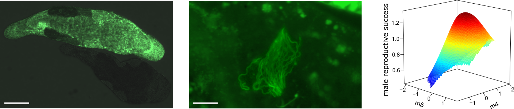

Sexual selection may occur before, during, and after copulation. I have used a powerful model organism, the flatworm Macrostomum lignano, in which I could study sperm competition in vivo (Marie-Orleach et al, BMC Evol Biol, 2014), and quantify the strength of selection acting along pre- and postcopulatory episodes of selection (Marie-Orleach et al, Evolution, 2016; Marie-Orleach et al., Evol. Lett., 2021). This body of work overall showed that, despite being usually cryptic, postcopulatory sexual selection may be a more important agent of selection than pre-copulatory sexual selection.
Copulation is not always a harmonious union between sexual partners. Conflicts of interests may arise and lead to a sexually antagonistic co-evolution between traits manipulating partners and traits resisting these manipulations. In Macrostomum lignano, individuals can affect the postcopulatory behaviours of their partners (Marie-Orleach et al., Anim. Behav., 2013), and the size of their testes (Marie-Orleach et al., Evolution, 2017) – and these effects differ among genotypes. Such socially induced plasticity, or indirect genetic effects, are increasingly recognised to play critical roles in driving phenotypic evolutionary trajectories (Bailey et al, Behav. Ecol., 2018).
Sexual isolation between closely related species is usually though to be innate. However, the traits underpinning reproductive barriers are often found to be socially plastic, and such plasticity would affect the evolution of reproductive isolation. Using several populations and species of in the Drosophila genus, I showed whether males are reared with homo- or heteropopulation males does not affect neither their courtship song (Marie-Orleach et al., Ecol. Evol., 2019), nor the strength of pre- and postcopulatory components of sexual isolation (Marie-Orleach, Behav. Ecol., 2020). Thus, although male sexual traits are highly plastic, this plasticity does not seem to affect the strength of sexual isolation.
Sexual selection is often considered an engine of speciation, but the empirical evidence are surprisingly scarce and challenging to obtain. Using meta-analyses, we show that species richness correlates with the strength of male sexual selection (Janicke et al., Proc. B., 2018), but not with the strength of assortative mating (Janicke et al., Am. Nat., 2019), suggesting that sexual selection, and not assortative mating, promotes speciation.
Simultaneously hermaphroditic species vary greatly in how much the self-fertilise. Selfing rates is well known to affect several key population genetics parameters, which may affect rates of speciation, but this is poorly understood. I build population genetics models to clarify how reproductive isolation builds in selfing compared to outcrossing lineages (Marie-Orleach et al., BioRxiv, 2022), providing predictions on the genetic architecture and pace of speciation testable in crossing experiments (Gustafsson et al., Ann. Bot., 2022).